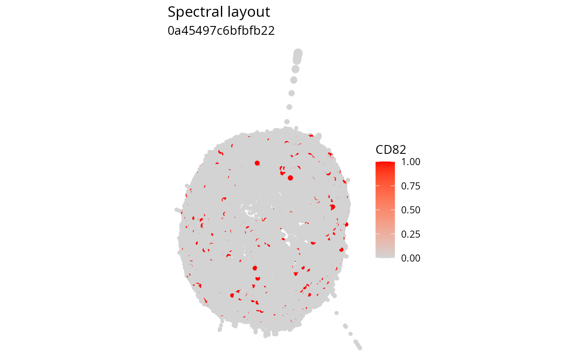

Create a cell plot recipe
cell_plot.RdCreates a cell-layout visualization recipe. The recipe stores data, column
mappings, and optional rendering instructions without drawing a plot. Add
instructions with the cell_*() modifier functions. Printing the recipe
builds and renders a ggplot. cell_plot_interactive() draws the same
recipe as a 3D Plotly widget. cell_plot_rgl() draws it as a native rgl
scene. cell_plot_animate() encodes a rotating GIF or video after
cell_coord_rotate(). summary() inspects the recipe without drawing.
Usage
cell_plot(
data,
x = x,
y = y,
z = z,
color = NULL,
size = NULL,
alpha = NULL,
arrange = z,
depth = z,
illumination_mask = NULL
)Arguments
- data
A non-empty tibble containing cell-layout data.
- x, y
Column mappings for the horizontal and vertical coordinates. Bare column names and character column names are supported.
- z
Column mapping for the third coordinate. Defaults to the
zcolumn.- color
Optional column mapping or constant color for every node. Character, factor, numeric, and integer columns are supported, where character and factor columns are treated as categorical and numeric and integer columns as continuous. A character value is read as a column name when
datahas that column and otherwise as one fully opaque color.- size, alpha
Optional column mappings or constant values for node size and alpha. Character, factor, numeric, and integer columns are supported, where character and factor columns are treated as categorical levels. One finite number sets a constant relative size or a constant alpha between zero and one. Category-specific sizes and alphas are set with
cell_node_scale_size()andcell_node_scale_alpha().- arrange
An optional column mapping used to order points in projected plots.
cell_plot_interactive()andcell_plot_rgl()ignore this mapping because occlusion follows the scene camera. Defaults to the mappedzcolumn.- depth
An optional column mapping used for ggplot depth sizing. Defaults to the mapped
zcolumn, so depth sizing is on unlessdepth = NULLturns it off. Must not be the same column asx,y, orsize. Plotly and rgl ignore this mapping.- illumination_mask
Optional logical column mapping. Illumination is applied only to rows where this column is
TRUE. Rows where it isFALSEretain their unilluminated colors. Missing values are not allowed.
Details
A cell_plot is an S3 list with a fixed set of fields:
data: the visualization tibblemapping: named column mappings (x,y,z,depth,color,size,alpha,illumination_mask,arrange)constant: singlecolor,size, andalphavalues shared by every point,NULLwhen the aesthetic is mapped or left at its defaultgrid,color,size,depth,alpha,theme,annotation,illuminate,coord: instruction slots,NULLuntil a modifier writes them
Coordinate defaults are x, y, and z. arrange and depth default to
the mapped z column. Pass depth = NULL to turn off depth sizing. Color,
size, and alpha default to no mapping.
color, size, and alpha accept either a column mapping or one constant
value shared by every point, such as color = "red", size = 3, or
alpha = 0.5. A constant aesthetic has no scale, so the matching
cell_node_scale_*() modifier cannot be used with it. Without a mapping and
without a constant, nodes are gray90 with relative size 1 and alpha
1.
When a size column is mapped, the default output range is c(2, 6) unless
cell_node_scale_size() overrides it. For a categorical size or alpha
mapping, cell_node_scale_size() and cell_node_scale_alpha() also accept
a named vector of per-level values, such as sizes = c(a = 1, b = 2, c = 3).
Color scale behavior is controlled by cell_node_scale_color(). Color scales
are trained once across all panels, and continuous scales span the observed
range unless limits are supplied.
Examples
# Plot a spectral layout of a cell from the example data
se <- ReadPNA_Seurat(minimal_pna_pxl_file())
#> ✔ Created a <Seurat> object with 5 cells and 158 targeted surface proteins
se <- LoadCellGraphs(se, cells = colnames(se)[4], verbose = FALSE) |>
ComputeLayout(layout_method = "spectral")
#> ℹ Computing layouts for 1 graphs
cell_graph <- CellGraphs(se)[[4]]
layout_data <- FetchLayoutData(cell_graph, vars = "CD82", layout_method = "spectral_3d")
cell_plot(layout_data, color = CD82) |>
cell_node_scale_color(colors = c("lightgrey", "red")) |>
cell_annotation(title = "Spectral layout", subtitle = colnames(se)[1])
